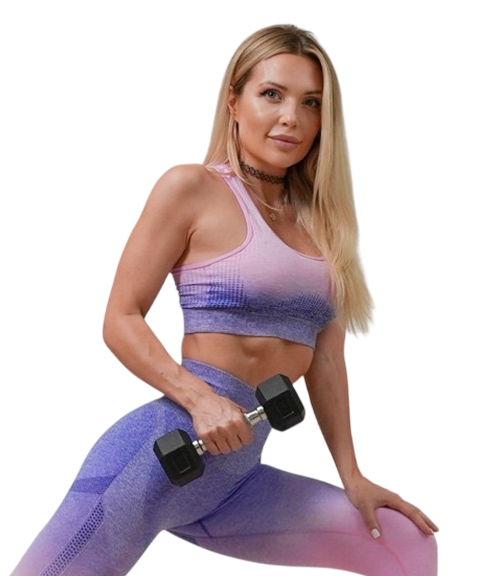
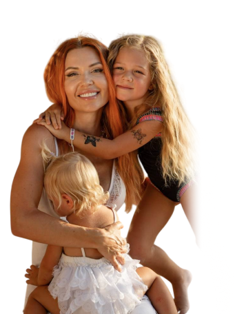

Доверьте свое тело чемпионке фитнес-бикини и тренеру Кате Усмановой
С 2015 года создает топовые тренировки для идеальных ягодиц, плоского живота и стройности без жестких диет. Уже более 580 000+ участниц тренируются с Катей, ведь она:
- Вице-чемпионка мира и чемпионка России по фитнес-бикини
- Профессиональный фитнес-тренер с опытом более 15 лет
- Мама 2-х детей. Всего за 100 дней после первых родов похудела на 20 кг и вернулась в прежнюю форму
- Автор первых в России масштабных марафонов стройности
- Чемпионка России и мира по жиму лежа


Тренировки дома

Метод Усмановой
Освойте технику и втянитесь в регулярные тренировки - без травм и через силу. Первая программа, с которой начинают все ученицы Кати.

Стройности
Первый видимый результат за 21 день - уходит лишний жир, появляется тонус и легкость. Для тех, кто стартует с нуля.

Упругая попа 1.0
Первый объем и подтянутость ягодиц - с собственным весом. Для тех, кто впервые целенаправленно работает над попой.

Упругая попа 2.0
Плотные, упругие ягодицы - следующий уровень после 1.0. С резинкой, утяжелителями, для подготовленных.

Плоский живот
Убрать выпирающий живот, который не уходит даже после похудения. Тренировки на глубокие мышцы пресса, которые отвечают за плоский живот.

Жиросжигающий
Сжечь жир и проявить рельеф - за 6 недель. Для тех, кто уже тренировался: с гантелями, по схеме интервальных нагрузок.
Тренировки в зале

Беременность и после родов

Для беременных
Легкие роды и тело без перегрузки - безопасные тренировки на всех триместрах. Те самые, по которым Катя тренировалась в свои беременности.

Восстановление после родов
Вернуться в форму после родов и кесарева - сначала диастаз, тазовое дно и осанка, потом стройность и тонус.
Отвечаем на вопросы
Да. На витрине есть программы для старта с нуля - например, Метод Усмановой и Марафон стройности. Катя показывает и объясняет каждое движение, вы просто повторяете. Если не знаете, с чего начать, напишите нам - поможем выбрать программу под вашу цель и уровень.
От 20 до 45 минут. Заниматься можно в любое удобное время - расписания нет, уроки открыты, включаете когда вам удобно днём или вечером.
Да, все программы рассчитаны на занятия дома. Для большинства достаточно коврика и собственного веса. Для некоторых программ пригодится минимальный инвентарь - фитнес-резинка, лёгкие гантели или утяжелители. Его можно заменить подручными средствами, например бутылками с водой. Что именно нужно, указано в описании каждой программы.
Срок доступа указан в описании каждой программы.
Да, рассрочка доступна. Условия указаны при оформлении заказа.
Да. При оформлении заказа нажмите «Оплатить картой иностранного банка», выберите удобный способ на платёжной странице и подтвердите оплату.
Да. Тренировки доступны в любой точке мира - нужен только смартфон, планшет или компьютер с интернетом.
Доступ к программам открывается в личном кабинете сразу после оплаты. Авторизация - по номеру телефона, который вы указали при оформлении заказа.
Проверьте, что авторизовались по тому же номеру телефона, который указывали при оплате. Письмо-подтверждение приходит на почту в течение суток - загляните и в папку «Спам». Если доступа всё равно нет, напишите в поддержку, поможем.
Напишите нам - поможем выбрать программу и ответим на любой вопрос. ВК: vk.ru/usmanovateam. Почта: help@usmanovasport.ru